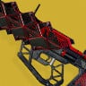
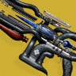
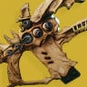
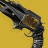
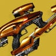
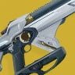
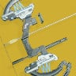
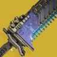

[CLICK THE FROG AGAIN TO MOVE TO FIRST PAGE]
Made by Justin Andrew Jimenez (9-Jerusalem)
[CLICK THE FROG AGAIN TO MOVE TO FIRST PAGE]
The game has various rarities of weapons ranging from gray common stuff to the highest which are called "Exotics".
Every Exotic Type Weapon has its own special characteristic that makes it feel like an Exotic Weapon.
These are my handpicked favorites from the pile of them.
| Weapon Icons | Weapon Names | Weapon Type | Unique Trait |
|---|---|---|---|
|  | Outbreak Perfected | Pulse Rifle | Bullets will spawn tiny nanobots to track other enemies |
|  | Ager's Scepter | Trace Rifle | Literally freeze the enemy |
|  | One Thousand Voices | Fusion Rifle | Shoots a beam of explosives |
|  | Thorn | Hand Cannon | Bullets inflict Poison |
|  | Vex Mythoclast | Fusion Rifle | Shoots lasers on auto |
|  | Telesto | Fusion Rifle | Is able to break the game several times |
|  | Trinity Ghoul | Bow | Shoots electric arrows that connects to other enemies |
|  | The Lament | Sword | Very epic sword combos to delete enemies |